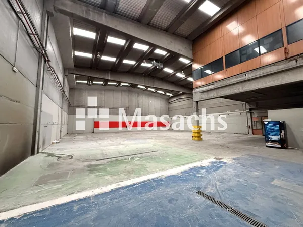
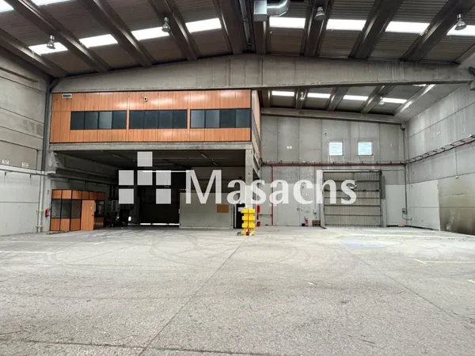
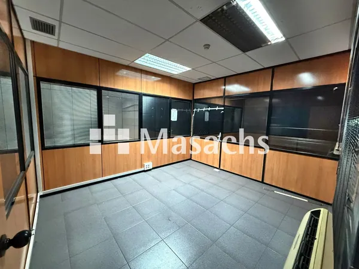

Plano · tocar un número de la lista lo marca acá
Letras: condiciones go/no-go · o: obra necesaria · números: lo que hay que medir o confirmar · c: lo que el chequeo de circulación marca hoy · trazos: el área o la franja de la cota · la línea azul: el largo libre a lo largo de la pista · ejes x/z: el origen de las cotas.
Condiciones go/no-go · si alguna sale mal, la nave se cae o hay que rehacer el layout
- Con margenDecide: ≥ 7,3 m libres bajo jácenas, cerchas, luminarias e instalaciones en la vertical de la plataforma: plataforma a 4,5 m + 2,4 m del rider + 0,4 m de instalaciones (PROGRAMA §1). Si da menos, se baja la plataforma (a lo medido − 2,8 m), nunca el run-out.Altura libre medida con láser sobre la plataforma (m):
9 notas del layout
fuente de la cota: publicada (8,80 m libres); en g00/g03 la jácena tiene intradós horizontal, así que es la altura bajo jácena en toda la luz
riesgo: Plataforma a 4,5 m (antes 5,0 m): es la altura que deja el paso de 1,2 m tras el run-out y una escalera de 2 tramos con huellas de 0,28 m. Para volver a 5,0 m con el paso, plataforma (1,8 m), rampa (12,0 m, 32,0° de máxima) y llano (9,0 m) tendrían que quedar en su mínimo, con una escalera de 3 tramos y 12 m que arrancaría dentro del pasillo frente al altillo.
riesgo: La altura bajo el altillo (≈5,0 m bajo forjado y ≈4,3 m bajo la viga de borde del costado) es estimada; por eso los trampolines y el pad quedan en la nave principal.
supuesto: Contorno rectangular de 25,0 × 32,0 m interiores, en 3 crujías de 10,67 m. La lista de pilares declara los adosados de los muros, que el visor toma como pórticos: los de los pórticos intermedios (0,5 × 0,6 m) y los de las esquinas del muro derecho, que dan las jácenas de testero. Suma 2 del altillo, el de esquina con protector y el del costado contra la fachada, que el visor dibuja hasta la cubierta.
supuesto: Altura: 8,80 m libres bajo jácena; alero 10,0 m y cumbrera 11,2 m (jácena de 0,9 → 2,0 m de canto + correa + chapa).
supuesto: Pista: arranca en la crujía de doble altura junto al altillo, contra el testero de fachada, y baja hacia el testero ciego del fondo. Así el run-out y el quarter mueren contra un muro sin huecos, a 31 m de la entrada; el llano queda a la vista del lounge y la escalera sale del pasillo frente al altillo. Plataforma de 2 × 9,45 m a 4,5 m (4,5 + 2,4 = 6,9 ≤ 8,8 − 0,4). Rampa ola de 11,0 m (22,2° de media, 31,5° de máxima). Llano de 9,8 m. Run-out de 8 m en L1-L2, con el tope acolchado dentro de la huella y la salida de 1,2 m a la izquierda, y quarter de 1,3 m en L3 con su plataforma. La huella termina a 1,2 m del testero: ese paso lleva de la salida del run-out al pasillo de retorno.
supuesto: Altillo: fondo 9,5 m (rango 9,0-9,9) y remate a ≈9,4 m deducidos de g02 (oclusión de la jácena por la esquina), sin plano ni medida directa. Las cotas de la franja de ventanas (antepecho 0,7 m, dintel 1,85 m sobre 5,4 m) se midieron en g03 suponiendo el frente en el plano de la jácena y pueden estar ≈5 % bajas. La caseta-oficina (z 7,6-10,4), el alquiler (z 6,05-10,2) y el banco de calzado (z 7,7-10,3) quedan ahora 0,7-0,9 m por delante del canto del forjado: no se movieron porque correrlos choca con la recepción y la caja de la escalera, y achicar la oficina la deja por debajo de 8 m²; medir en la visita dónde está de verdad la caseta respecto del frente.
supuesto: medir en la visita: la z del primer pórtico (pilar adosado del muro izquierdo y jácena) y la del frente del altillo. El ajuste de 5 fotos da d 11,4-12,8 en todas las variantes; g02 pone la esquina del altillo delante de la jácena; el layout usa 9,5 y 10,67, y ese 10,67 depende de 32/3 y de cámaras cuya z no está fijada (ver match3).
supuesto: medir en la visita: el ancho del altillo (11,9 en el layout, 11,5-11,7 en el ajuste conjunto) y una distancia larga de la nave (el ancho de muro a muro o la luz del portón). La escala de todo el layout sale de los 8,80 m publicados y las fotos no la comprueban de forma independiente (ver match3, escala). Comprobar también a qué altura se tomaron las fotos: las cámaras salen a 1,6-3,3 m del suelo, algo alto para fotos a mano; si se tomaron a ≈1,5 m, la escala bajaría un 5-10 %.
- Se decide en la visitaDecide: ≥ 30,8 m en línea recta a lo largo de la pista (plataforma 2 m, rampa, llano y el final más largo, run-out ≥ 8 m), del muro detrás de la plataforma al muro después del final. Si da menos, se acorta la rampa o el llano y se baja la plataforma, nunca el run-out.Distancia del muro al muro, a lo largo de la pista (m):
2 notas del layout
riesgo: Sin plano ni dirección, el ancho (±1,5 m) y el fondo (±2 m) salen de la perspectiva y de los 800 m². Si esos 800 m² son construidos (con muros), el interior ronda 780 m², y la pista de 30,8 m y su paso de 1,2 m entran sin margen. Si el fondo real es menor, primero se recorta el llano (9,8 → 9 m), después se bajan plataforma y rampa (4,2 m / 10,3 m) y por último se quita el paso tras el run-out, abriendo una puerta en el murete lateral. El run-out de 8 m no se toca. Si el ancho es menor, lo pierde la banda de programa: primero las colchonetas laterales de los trampolines, después el lounge.
supuesto: medir en la visita: el fondo interior de testero a testero y si los muros largos son paralelos. El layout usa 32,0 m (800 m² / 25 m) y las fotos no lo fijan: las cámaras de g01, g04 y g11 pueden ir en z 31,7 o en z ≈35 cambiando la focal, casi con el mismo error, y g02 da de 30,9 a 37,7 m según la focal supuesta (ver match3).
- Se decide en la visitaDecide: Dos salidas o más a la calle o a un espacio exterior seguro, con recorridos de evacuación ≤ 50 m (CTE DB-SI 3 §3, tabla 3.1), y sus puertas con ≥ 0,80 m de paso y 2,10 m bajo el dintel. Cada salida nueva solo vale si el muro da a la calle o a un patio con salida y la propiedad deja abrirla (las obras, en «Obra necesaria»).
- acceso acristalado de 3,6 m en la arista 0 (hueco 0, x 2,85 · z 0): cambia (hoy es portón seccional: hay que hacer la obra) · obra o1
- salida de emergencia de 1,2 m en la arista 2 (hueco 6, x 13,8 · z 32): nueva (hay que abrirla) · obra o2
Salidas confirmadas (cuáles, a dónde dan, ancho de paso):7 notas del layout
riesgo: Escalera a oficinas sin ver en las fotos: se dibuja en la mitad este del bloque blanco (detrás de la puerta con señal de salida de g01/g04). Desde rp-ripollet (25/11) no sirve a nada del programa: su puerta se tabica y el altillo queda clausurado (nota 17). Para volver a usar el altillo hay que confirmarla en la visita, y si es de oficinas (tramos de más de 2,25 m o huella corta), rehacerla o hacer una escalera nueva de uso público.
riesgo: Segunda salida: no se ve ninguna puerta en el testero B ni en los muros largos. Se propone en B, al final del pasillo de retorno. Si B es medianera, hace falta una puerta peatonal nueva en el testero F, en el paso entre el altillo y la escalera (x≈12-13,5 m), y las dos salidas quedarían en la misma fachada.
riesgo: El portón seccional (≈5,3 × 4,9 m) queda inutilizado detrás de la torre de salida. Los módulos (rail de 6 m, kicker de 2,6 × 2,4 m) entran por el portón bajo el altillo (≈3,6 × 3,6 m), que pasa a ser la entrada de público: su frente acristalado tiene que abrir a todo el ancho.
riesgo: Paso de 1,2 m detrás del run-out (z 30,8-32,0, zona `retorno-fondo`): es por donde los riders de L2 vuelven al pasillo de retorno con la tabla (los de L1 salen por el lateral), y deja 1,15 m libres contra los 1,80 de un retorno (PROGRAMA §1; walkabilityReport `return retorno-fondo`). Decisión del usuario: (a) acortar el llano 0,7 m (16,8 → 16,1; el mínimo es 9 y el run-out de 8 m no se toca), que deja 1,9 m detrás del run-out; o (b) una puerta en la red del lado del retorno al final del run-out, con el paso de detrás solo como salida del run-out de ESQUEMA (1,2 m). rp-d había sacado la zona en su primera vuelta (24/11) sin cambiar el paso: vuelve, y el error queda abierto como de datos.
riesgo: Evacuación del altillo (rp-ripollet, 25/11: cerrada sin obra). Su única bajada es la escalera de oficinas, en U de 4 tramos dentro de la caja de obra (≈19 m), y la caja no se sabe protegida (EI 120, puerta EI2 60-C5, ventilación): su arranque no es salida de planta (DB-SI Anejo A vigente, RD 732/2019) y el recorrido cuenta hasta la salida del edificio. Usado, daba 60,4 m desde su rincón oeste (DB-SI 3 tabla 3.1: 50, `evacuation max`) y 43,0 m hasta un punto con dos recorridos alternativos (25, `evacuation alternative`). Ahora la puerta de la caja se tabica (cierre-caja-escalera, fit-out) y la caja, la escalera y el altillo quedan clausurados, sin puerta ni uso (sin puntos ocupables no son origen de evacuación, DB-SI Anejo A); el gym salió del programa (nota 2): lo más lejos de una salida es la plataforma de la pista (41,0 m con 2 salidas; 22,4 hasta dos recorridos). Usar el altillo o abrirle una puerta, aunque sea solo de mantenimiento, vuelve los dos errores. Para recuperarlo (el gym o los despachos), decisión del usuario y obra: (a) que la caja sea una escalera protegida, confirmado en la visita (su puerta pasa a ser salida de planta, ≈12 m); o (b) una segunda bajada de uso público desde el altillo, con una puerta de emergencia en la fachada F (z = 0) en x ≈ 11,5-12,7 junto a la caja, que da a la calle. La extinción automática (+25 %, 62,5 y 31,3 m) y esa salida sola, sin la segunda bajada (33,9 m), no alcanzan.
supuesto: Del bloque blanco bajo el altillo solo se ve el exterior (≈4,7 × 5,8 × 2,7 m). Se supone que guarda los aseos (mitad oeste) y la escalera de las oficinas (mitad este), que sale a la crujía del portón por donde g01/g04 muestran la puerta con señal de salida. Se dibuja en U de 4 tramos dentro de su caja, con la puerta a la crujía; desde rp-ripollet (25/11) esa puerta se tabica y el altillo queda clausurado (sin el gym ni las oficinas).
supuesto: Pista: arranca en la crujía de doble altura junto al altillo, contra el testero de fachada, y baja hacia el testero ciego del fondo. Así el run-out y el quarter mueren contra un muro sin huecos, a 31 m de la entrada; el llano queda a la vista del lounge y la escalera sale del pasillo frente al altillo. Plataforma de 2 × 9,45 m a 4,5 m (4,5 + 2,4 = 6,9 ≤ 8,8 − 0,4). Rampa ola de 11,0 m (22,2° de media, 31,5° de máxima). Llano de 9,8 m. Run-out de 8 m en L1-L2, con el tope acolchado dentro de la huella y la salida de 1,2 m a la izquierda, y quarter de 1,3 m en L3 con su plataforma. La huella termina a 1,2 m del testero: ese paso lleva de la salida del run-out al pasillo de retorno.
- Se decide en la visitaDecide: Huella ≥ 0,28 m, contrahuella de 0,13 a 0,185 m y 0,54 ≤ 2C + H ≤ 0,70 (CTE DB-SUA 1 §4.2.1); ancho ≥ 1,20 m (PROGRAMA; el CTE pide 1,00-1,10); tramos de ≤ 2,25 m sin descanso. Una escalera existente que no cumple no sirve para el público (gym o altillo): hay que rehacerla o poner otra.
- de la plataforma (escalera): huella 0,28 m, contrahuella 0,17 m, ancho 1,28 m, tramo de 2,25 m sin descanso, sube 4,5 m
- existente (escalera-oficinas): huella 0,29 m, contrahuella 0,17 m, ancho 1,1 m, tramo de 1,35 m sin descanso, sube 5,4 m · hoy no se llega a su arranque
Huella × contrahuella × ancho de la escalera existente (m):15 notas del layout
riesgo: Escalera a oficinas sin ver en las fotos: se dibuja en la mitad este del bloque blanco (detrás de la puerta con señal de salida de g01/g04). Desde rp-ripollet (25/11) no sirve a nada del programa: su puerta se tabica y el altillo queda clausurado (nota 17). Para volver a usar el altillo hay que confirmarla en la visita, y si es de oficinas (tramos de más de 2,25 m o huella corta), rehacerla o hacer una escalera nueva de uso público.
riesgo: Segunda salida: no se ve ninguna puerta en el testero B ni en los muros largos. Se propone en B, al final del pasillo de retorno. Si B es medianera, hace falta una puerta peatonal nueva en el testero F, en el paso entre el altillo y la escalera (x≈12-13,5 m), y las dos salidas quedarían en la misma fachada.
riesgo: El contenido del bloque blanco (aseos y escalera) es una interpretación desde fuera. Si los aseos están arriba, hay que hacer aseos generales nuevos en ese hueco de 4,7 × 5,8 m.
riesgo: Lounge (23,9 m²) y café (7,4 m², barra de solo 1,4 m), 31,3 m² entre los dos, cerca del mínimo del programa. Se llega a ellos, al pad, al taller y a los trampolines por el tramo inicial del pasillo de retorno (5,5 m compartidos con los riders que vuelven a la escalera) y el paso de 1,23 m junto al café; a los trampolines, desde el fondo del lounge por el paso de 1,2 m de su lado +x (rp-ripollet, ronda de arreglos, 25/11).
riesgo: Plataforma a 4,5 m (antes 5,0 m): es la altura que deja el paso de 1,2 m tras el run-out y una escalera de 2 tramos con huellas de 0,28 m. Para volver a 5,0 m con el paso, plataforma (1,8 m), rampa (12,0 m, 32,0° de máxima) y llano (9,0 m) tendrían que quedar en su mínimo, con una escalera de 3 tramos y 12 m que arrancaría dentro del pasillo frente al altillo.
riesgo: Escalera fuera de la franja de la red: entre su meseta y la plataforma quedan 0,2 m que en obra hay que puentear con una chapa o prolongando la meseta. El visor no pone barandilla en el lado de los descansos que mira a la plataforma. El descanso intermedio (a 2,25 m) da a 0,2 m del faldón de contrachapado de la rampa, que solo lo sobrepasa entre 0,4 y 1,1 m, así que en obra necesita barandilla de 1,10 m hacia la rampa.
riesgo: Altillo: con 11,9 × 9,5 m la huella es de 113 m², todavía más lejos de los 150 m² construidos arriba que da el anuncio (950 − 800). O el altillo es más ancho o más hondo de lo que se ve, o hay otra superficie construida arriba: medir en la visita.
riesgo: Evacuación del altillo (rp-ripollet, 25/11: cerrada sin obra). Su única bajada es la escalera de oficinas, en U de 4 tramos dentro de la caja de obra (≈19 m), y la caja no se sabe protegida (EI 120, puerta EI2 60-C5, ventilación): su arranque no es salida de planta (DB-SI Anejo A vigente, RD 732/2019) y el recorrido cuenta hasta la salida del edificio. Usado, daba 60,4 m desde su rincón oeste (DB-SI 3 tabla 3.1: 50, `evacuation max`) y 43,0 m hasta un punto con dos recorridos alternativos (25, `evacuation alternative`). Ahora la puerta de la caja se tabica (cierre-caja-escalera, fit-out) y la caja, la escalera y el altillo quedan clausurados, sin puerta ni uso (sin puntos ocupables no son origen de evacuación, DB-SI Anejo A); el gym salió del programa (nota 2): lo más lejos de una salida es la plataforma de la pista (41,0 m con 2 salidas; 22,4 hasta dos recorridos). Usar el altillo o abrirle una puerta, aunque sea solo de mantenimiento, vuelve los dos errores. Para recuperarlo (el gym o los despachos), decisión del usuario y obra: (a) que la caja sea una escalera protegida, confirmado en la visita (su puerta pasa a ser salida de planta, ≈12 m); o (b) una segunda bajada de uso público desde el altillo, con una puerta de emergencia en la fachada F (z = 0) en x ≈ 11,5-12,7 junto a la caja, que da a la calle. La extinción automática (+25 %, 62,5 y 31,3 m) y esa salida sola, sin la segunda bajada (33,9 m), no alcanzan.
supuesto: Del bloque blanco bajo el altillo solo se ve el exterior (≈4,7 × 5,8 × 2,7 m). Se supone que guarda los aseos (mitad oeste) y la escalera de las oficinas (mitad este), que sale a la crujía del portón por donde g01/g04 muestran la puerta con señal de salida. Se dibuja en U de 4 tramos dentro de su caja, con la puerta a la crujía; desde rp-ripollet (25/11) esa puerta se tabica y el altillo queda clausurado (sin el gym ni las oficinas).
supuesto: La caseta acristalada bajo el altillo se conserva como oficina de pista con botiquín. Los tres despachos de arriba no se usan: desde rp-ripollet (25/11) el altillo queda clausurado en la puerta de la caja de su escalera (cierre-caja-escalera).
supuesto: Pista: arranca en la crujía de doble altura junto al altillo, contra el testero de fachada, y baja hacia el testero ciego del fondo. Así el run-out y el quarter mueren contra un muro sin huecos, a 31 m de la entrada; el llano queda a la vista del lounge y la escalera sale del pasillo frente al altillo. Plataforma de 2 × 9,45 m a 4,5 m (4,5 + 2,4 = 6,9 ≤ 8,8 − 0,4). Rampa ola de 11,0 m (22,2° de media, 31,5° de máxima). Llano de 9,8 m. Run-out de 8 m en L1-L2, con el tope acolchado dentro de la huella y la salida de 1,2 m a la izquierda, y quarter de 1,3 m en L3 con su plataforma. La huella termina a 1,2 m del testero: ese paso lleva de la salida del run-out al pasillo de retorno.
supuesto: Escalera a la plataforma: 2 tramos rectos en línea a lo largo del costado del altillo (x 13,4-14,65), de 1,25 m de ancho. Cada tramo tiene 13 contrahuellas de 0,173 y huellas de 0,28; entre ellos hay un descanso de 1,2 m a 2,25 m y arriba una meseta de llegada de 1,2 m junto a la plataforma (z 0,8-2,0), donde la barandilla de la plataforma deja el hueco. La escalera queda fuera de la franja de 0,2 m de la red; en obra, la meseta se prolonga con una chapa hasta la plataforma.
supuesto: Sin gimnasio (rp-ripollet, ronda de arreglos, 25/11): el altillo, adonde iba (la sala diáfana, g05/g09), queda clausurado porque su única escalera ya pasa de los 25 m hasta dos recorridos alternativos (DB-SI 3 tabla 3.1), y en planta baja no entra después de pista, pad y trampolines (PROGRAMA: «pista > mini rampa / pad > trampolines > gym»). La primera vuelta de rp-ripollet (800c9cb3) lo bajó al testero del fondo (5,45 × 4,72 = 25,7 m²) con los trampolines recortados y la entrada a ellos por su frente: ver la nota de riesgos 2.
supuesto: Altillo: fondo 9,5 m (rango 9,0-9,9) y remate a ≈9,4 m deducidos de g02 (oclusión de la jácena por la esquina), sin plano ni medida directa. Las cotas de la franja de ventanas (antepecho 0,7 m, dintel 1,85 m sobre 5,4 m) se midieron en g03 suponiendo el frente en el plano de la jácena y pueden estar ≈5 % bajas. La caseta-oficina (z 7,6-10,4), el alquiler (z 6,05-10,2) y el banco de calzado (z 7,7-10,3) quedan ahora 0,7-0,9 m por delante del canto del forjado: no se movieron porque correrlos choca con la recepción y la caja de la escalera, y achicar la oficina la deja por debajo de 8 m²; medir en la visita dónde está de verdad la caseta respecto del frente.
supuesto: plantilla Stoke Mountain adaptada: plataforma 4.5 m × 2.0 m; drop-in de 1.43 m en 4.0 m; 2 terraza(s) de 5.1 m que caen 5° unidas por drops de 1.07 m en 3.0 m; carril de transición en la línea 3 (bajada de 11.8 m, kicker Accelerator y 0 rollers de 0,3 m); 4 módulos a escala real por terraza (T1 cajones cortos, T2 cajón largo / rail / roller, down rail en el último drop), solo donde se llega con velocidad (µ 0,09); misma huella, mismos finales (run-out ≥ 8 m / quarter) y escalera; los módulos anteriores quedan en slope.legacyModules.
- Se decide en la visitaDecide: Ningún pilar dentro de la pista; los de la franja de 0,2 m del murete y la red, forrados (el murete se corta en cada uno); el pasillo de retorno, ≥ 1,80 m libres con los pilares.Posición y sección de los pilares junto a la pista (m):
- Se decide en la visitaDecide: El ancho entre medianeras (cara de los pilares) que da para las líneas de la pista, su franja y el retorno de ≥ 1,80 m.Ancho interior entre caras de pilares (m):
1 nota del layout
riesgo: Sin plano ni dirección, el ancho (±1,5 m) y el fondo (±2 m) salen de la perspectiva y de los 800 m². Si esos 800 m² son construidos (con muros), el interior ronda 780 m², y la pista de 30,8 m y su paso de 1,2 m entran sin margen. Si el fondo real es menor, primero se recorta el llano (9,8 → 9 m), después se bajan plataforma y rampa (4,2 m / 10,3 m) y por último se quita el paso tras el run-out, abriendo una puerta en el murete lateral. El run-out de 8 m no se toca. Si el ancho es menor, lo pierde la banda de programa: primero las colchonetas laterales de los trampolines, después el lounge.
Obra necesaria · lo que la nave no tiene hoy y la propuesta necesita: decisiones del usuario, a ver en la visita si se puede
- cambia: hoy es portón seccionalObra: Se cierra con frente acristalado plegable y puerta accesible de 1,2 m como entrada de públicoEn la visita: Hoy es portón seccional: medir el hueco libre (ancho y alto) y ver dónde va acceso acristalado.
- Es la entrada de público: el chequeo de circulación mide desde ella.
- Es una de las 2 salidas que cuenta el chequeo de circulación: sin ella quedaría una sola (hoy, portón seccional, no es salida: CTE DB-SI 3 §6).
De dónde sale
fuente: g03/g00: portón seccional oscuro bajo el altillo, con luz por debajo; medido a la escala del testero F (37,5 px/m en g03): x≈1,05-4,65 y ≈3,6 m de alto (en g00 el dintel queda ≈1,4 m por debajo del forjado de 5,0 m). Propuesta: se cierra con frente acristalado plegable y puerta accesible de 1,2 m como entrada de público
Visto: - hueco nuevoObra: Segunda salida en el testero del fondo, al final del pasillo de retorno (x≈13,2-14,4); en g02 el testero B se ve ciego de esquina a esquina (paneles verticales y franja roja) — confirmar que da a calle o patioEn la visita: Que el paño de muro dé a la calle o a un espacio exterior seguro (si da a una nave vecina, solo vale como salida de planta, con un vestíbulo de independencia o un pasillo protegido: CTE DB-SI Anejo A), que en el hueco no haya pilares, bajantes ni instalaciones, y que la propiedad deje abrirlo.
- Es una de las 2 salidas que cuenta el chequeo de circulación: sin ella quedaría una sola.
De dónde sale
fuente: propuesta: segunda salida en el testero del fondo, al final del pasillo de retorno (x≈13,2-14,4); en g02 el testero B se ve ciego de esquina a esquina (paneles verticales y franja roja) — confirmar que da a calle o patio
Visto:
Medir y confirmar en la visita · 9, de las notas del layout
-
Detalle
Altillo: fondo 9,5 m (rango 9,0-9,9) y remate a ≈9,4 m deducidos de g02 (oclusión de la jácena por la esquina), sin plano ni medida directa. Las cotas de la franja de ventanas (antepecho 0,7 m, dintel 1,85 m sobre 5,4 m) se midieron en g03 suponiendo el frente en el plano de la jácena y pueden estar ≈5 % bajas. La caseta-oficina (z 7,6-10,4), el alquiler (z 6,05-10,2) y el banco de calzado (z 7,7-10,3) quedan ahora 0,7-0,9 m por delante del canto del forjado: no se movieron porque correrlos choca con la recepción y la caja de la escalera, y achicar la oficina la deja por debajo de 8 m²; medir en la visita
Medido: -
Detalle
medir en la visita:
El layout usa 32,0 m (800 m² / 25 m) y las fotos no lo fijan: las cámaras de g01, g04 y g11 pueden ir en z 31,7 o en z ≈35 cambiando la focal, casi con el mismo error, y g02 da de 30,9 a 37,7 m según la focal supuesta (ver match3).
Medido: -
Detalle
medir en la visita:
El layout pone los pórticos en 10,67 y 21,33 (3 crujías iguales de 32/3). g04 y g11 dan el segundo en ≈22,0-22,7 con cualquier cámara; g00 da 19,5-21,9 según la cámara, sin fijarlo. Si es ≈22,4, las crujías no son iguales (≈10,7 / ≈11,7 / …) y la discusión del fondo pasa a depender de dónde están los pórticos, no de dónde está la cámara.
Medido: -
Detalle
medir en la visita:
El ajuste de 5 fotos da d 11,4-12,8 en todas las variantes; g02 pone la esquina del altillo delante de la jácena; el layout usa 9,5 y 10,67, y ese 10,67 depende de 32/3 y de cámaras cuya z no está fijada (ver match3).
Medido: -
Detalle
medir en la visita:
px), con la parte baja pintada de rojo, una tubería roja vertical y un armario rojo (BIE). Con la cámara del ajuste libre (z 35,4) ese borde mira al muro izquierdo en z ≈32, donde el layout pone el testero del fondo; con la cámara dentro (z 31,7) la esquina del fondo queda justo fuera del encuadre. Si es el testero del fondo, encajaría a la vez con cámaras en z > 32 y con una nave de 32 m.
Medido: -
Detalle
medir en la visita:
La escala de todo el layout sale de los 8,80 m publicados y las fotos no la comprueban de forma independiente (ver match3, escala). Comprobar también a qué altura se tomaron las fotos: las cámaras salen a 1,6-3,3 m del suelo, algo alto para fotos a mano; si se tomaron a ≈1,5 m, la escala bajaría un 5-10 %.
Medido: -
Detalle
Escalera a oficinas sin ver en las fotos: se dibuja en la mitad este del bloque blanco (detrás de la puerta con señal de salida de g01/g04). Desde rp-ripollet (25/11) no sirve a nada del programa: su puerta se tabica y el altillo queda clausurado (nota 17).
Medido: -
Detalle
Altillo: con 11,9 × 9,5 m la huella es de 113 m², todavía más lejos de los 150 m² construidos arriba que da el anuncio (950 − 800).
Medido: -
Detalle
Evacuación del altillo (rp-ripollet, 25/11: cerrada sin obra). Su única bajada es la escalera de oficinas, en U de 4 tramos dentro de la caja de obra (≈19 m), y la caja no se sabe protegida (EI 120, puerta EI2 60-C5, ventilación): su arranque no es salida de planta (DB-SI Anejo A vigente, RD 732/2019) y el recorrido cuenta hasta la salida del edificio. Usado, daba 60,4 m desde su rincón oeste (DB-SI 3 tabla 3.1: 50, `evacuation max`) y 43,0 m hasta un punto con dos recorridos alternativos (25, `evacuation alternative`). Ahora la puerta de la caja se tabica (cierre-caja-escalera, fit-out) y la caja, la escalera y el altillo quedan clausurados, sin puerta ni uso (sin puntos ocupables no son origen de evacuación, DB-SI Anejo A); el gym salió del programa (nota 2): lo más lejos de una salida es la plataforma de la pista (41,0 m con 2 salidas; 22,4 hasta dos recorridos). Usar el altillo o abrirle una puerta, aunque sea solo de mantenimiento, vuelve los dos errores.
público desde el altillo, con una puerta de emergencia en la fachada F (z = 0) en x ≈ 11,5-12,7 junto a la caja, que da a la calle. La extinción automática (+25 %, 62,5 y 31,3 m) y esa salida sola, sin la segunda bajada (33,9 m), no alcanzan.
Medido:
Circulación · lo que el chequeo marca hoy (CTE DB-SI 3, DB-SUA): ver en la visita si el paso real es así
- no cumplepasillo de retorno retorno-fondo: 1,15 m libres a lo largo (≥ 1,80 m; dibujado de 1,20 m), acotado por la huella de la pista (con el margen de las redes), un borde de suelo (desnivel o hueco) y un muro o tabique de la navePROGRAMA §1 · el paso de 1,2 m entre el final del run-out (z 30,8) y el testero (z 32,0) es por donde los riders de L2 vuelven al retorno con la tabla: 1,15 m libres contra 1,80 (PROGRAMA §1). Datos de ripollet-canmasachs, a decidir por el usuario (notes.risks): acortar el llano 0,7 m (16,8 → 16,1, sobre los 9 del mínimo; el run-out de 8 m no se toca) o una puerta en la red del lado del retorno al final del run-out para que no lo usen (rp-d, segunda vuelta: la zona se había sacado y el paso seguía igual)
Fotos que conviene sacar
- Fachada y acera desde enfrente, con la calle a los dos lados (la llegada a pie y en coche, y dónde se aparca).
- Cada puerta (3: acceso acristalado, portón seccional, salida de emergencia) desde dentro y desde fuera, con el metro abierto en el paso libre y en la altura.
- La pared del arranque de la pista (detrás de la plataforma) de suelo a cubierta, con la jácena o la cercha de encima y el láser apuntando a su cara de abajo.
- El final de la pista: lo que hay después del run-out (muro, frente del altillo, salida) y el suelo de esa franja.
- Las dos medianeras de punta a punta, para contar pórticos y pilastras y ver si sobresalen.
- La cubierta y los lucernarios desde el centro de la nave, mirando a cada testero (para la luz del 3D y el estado de las placas).
- El suelo: estado, juntas, desniveles, sumideros y arquetas.
- El cuadro eléctrico, la acometida de agua y los desagües (vestuarios y aseos nuevos).
- El frente del altillo de punta a punta, y debajo: la altura libre, sus pilares y sus puertas.
- La escalera existente de lado, con el metro en una huella y una contrahuella, y su llegada arriba.
- B. Largo libre para la pista: una foto con la medida a la vista.
- C. Salidas y evacuación: una foto con la medida a la vista.
- D. Escaleras: peldaños, ancho y tramos: una foto con la medida a la vista.
- E. Pilares en la pista, su franja o el retorno: una foto con la medida a la vista.
- F. Ancho interior: una foto con la medida a la vista.
- o1. Obra necesaria (x 2,85 · z 0): el sitio desde dentro y, si se puede, desde fuera, con lo que hay detrás.
- o2. Obra necesaria (x 13,8 · z 32): el sitio desde dentro y, si se puede, desde fuera, con lo que hay detrás.
- Repetir desde el mismo sitio las fotos del anuncio de abajo (el móvil a la altura de los ojos, sin zoom): con la nave medida se vuelven a ajustar las cámaras y el plano.


